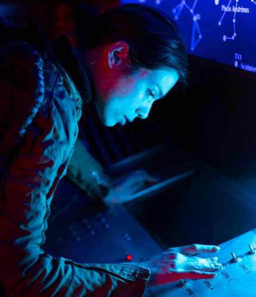

STORY
奪われた故郷の星を取り戻せ
壮大なSFファンタジー
銀河歴222年、惑星ネコチャンは、ボスネコ将軍の率いる軍の反乱により完全に制圧された。 将軍の側近マンチカンは軍政府に従わない人間を辺境の星ニャゴーへ強制的に追放。 食料や資源の乏しいニャゴーでは多くの難民が発生し飢餓に苦しんでいた。 ニャゴーのスラム街で育った孤児の姉弟がいた。姉のミケと弟のタマは母親をボスネコ将軍に殺された事実を知る。 母の復讐のため、そして故郷の惑星ネコチャンを奪還すべく、ミケとタマはいま行動に出る！


隠された陰謀を暴け
衝撃的な事実に驚愕
ミケとタマはネコジャラシ作戦により軍政府の最新鋭の小型船チュールを奪うことに成功。 チュールのハイテンションワープ恒星間航行により惑星ネコチャンへあとわずか３時間で到着という時、 小惑星帯アビシニアンで謎の救難信号を受信する。意外にも信号の発信源はボスネコ将軍だった。 彼は今にも絶えそうなかすれた声で「私はおまえたちミケとタマの父親なのだ」と語る。その瞬間、 ミケとタマの育ての親同然で仲間のはずのホワイトオッドアイがタマの背中を刀で切り裂いたのだった......